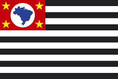
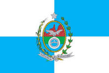
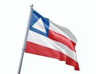
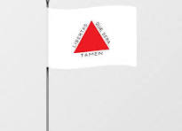

Day 2: Exploring Brazil
Introduction to Brazil
Brazil is the biggest country in South America. It is a place with beautiful beaches, thick forests, and lively cities. The capital city is Brasília, which was specially designed by a famous architect named Oscar Niemeyer. Brazil is full of surprises, from the exciting Carnival festival to the natural wonder of the Amazon Rainforest. People in Brazil love to celebrate, dance, and enjoy life to the fullest.
Brazil's landscape is diverse. You can find mountains, rivers, forests, and beaches all in one country. The Amazon Rainforest, known as the "lungs of the Earth," covers much of Brazil and is home to countless species of plants and animals. Brazil's culture is as colorful as its landscapes, with influences from Indigenous, African, and European traditions.
The people of Brazil, called Brazilians, are friendly and love to share their culture with visitors. Whether you are exploring the busy streets of São Paulo or relaxing on the beaches of Rio de Janeiro, there is always something exciting to see and do in Brazil.
Carnival is the biggest festival in Brazil. It is famous worldwide for its colorful parades, lively music, and elaborate costumes.

The Amazon Rainforest is a huge forest that covers more than 60% of Brazil. It is filled with amazing wildlife and plants.

The Christ the Redeemer statue in Rio de Janeiro is one of the New Seven Wonders of the World. It stands tall, overlooking the city.
Copacabana Beach is one of the most famous beaches in the world, located in Rio de Janeiro. It is a popular spot for tourists and locals alike.
Big Cities
Brazil has many large and exciting cities. São Paulo is the biggest city in Brazil, and it is known as the business hub of the country. It is a place where many people come to work and live. São Paulo has tall buildings, busy streets, and lots of shops and restaurants.
Rio de Janeiro, often called "Rio," is one of the most famous cities in Brazil. It is known for its beautiful beaches, the Christ the Redeemer statue, and the Carnival festival. The city is full of life, with music, dancing, and sports being a big part of daily life.
Salvador is another important city in Brazil. It is the capital of the state of Bahia and is known for its rich Afro-Brazilian culture. Salvador is a city with deep historical roots, and it has many old buildings, churches, and squares that tell the story of Brazil's past. The city's vibrant culture can be seen in its music, dance, and festivals.
Famous Places
Brazil is a country with many famous landmarks that attract visitors from all over the world. The Amazon Rainforest is one of these famous places. It is the largest rainforest on Earth and is known for its incredible biodiversity. Visitors to the Amazon can explore its winding rivers, dense forests, and meet some of the people who call this place home.
The Christ the Redeemer statue is another iconic landmark in Brazil. Standing on top of the Corcovado mountain in Rio de Janeiro, this massive statue of Jesus Christ has become a symbol of Brazil and is recognized worldwide. Visitors can take a train up the mountain to see the statue up close and enjoy breathtaking views of the city below.
Copacabana Beach in Rio de Janeiro is also world-famous. This sandy beach stretches for kilometers along the Atlantic Ocean and is a favorite spot for locals and tourists to relax, play sports, and enjoy the sun. The beach is lined with hotels, restaurants, and shops, making it a lively and vibrant place to visit.
Culture
Brazilians are known for their love of music, dance, and festivals. The most famous festival in Brazil is Carnival. Carnival is a time of joy and celebration, where people dress in colorful costumes, dance to samba music, and participate in parades that fill the streets with energy and excitement. Carnival is celebrated all over Brazil, but the biggest and most famous celebration takes place in Rio de Janeiro.
Music is a big part of Brazilian culture. Samba is one of the most popular types of music in Brazil, and it is often played during Carnival. Bossa nova is another famous Brazilian music style, known for its smooth and relaxing sounds. Brazilians also enjoy listening to forró, a type of folk music from the northeastern part of the country.
Brazilian food is delicious and full of flavors. Feijoada is a traditional Brazilian dish made with black beans and pork, often served with rice. Churrasco, or Brazilian barbecue, is also very popular, where different types of meat are cooked on a grill and served with various side dishes. Brazilians also enjoy eating fresh fruits, especially tropical ones like mangoes, papayas, and pineapples.
Heroes
Brazil has many heroes who have made a significant impact on the country and the world. Pelé is one of Brazil's most famous heroes. He is considered one of the greatest soccer players of all time and is known for his incredible skill and sportsmanship. Pelé won three World Cups with the Brazilian national team and inspired millions of people around the world with his talent.
Oscar Niemeyer is another important figure in Brazil. He was the architect behind the design of Brasília, the capital of Brazil. Niemeyer was known for his modern and innovative designs, and his work has influenced architecture worldwide. Brasília is a unique city because it was entirely planned and built from scratch, with Niemeyer's vision at its core.
Ayrton Senna is another Brazilian hero. He was a Formula 1 racing driver who won three World Championships. Senna was known for his speed, skill, and determination on the track. He is remembered as one of the greatest racing drivers in history and is a source of pride for Brazilians.
States, Their Flags, and Capital Cities in Brazil
| State | Flag | Capital City |
|---|---|---|
| São Paulo |  | São Paulo |
| Rio de Janeiro |  | Rio de Janeiro |
| Bahia |  | Salvador |
| Minas Gerais |  | Belo Horizonte |
Did You Know?
Did you know that Brazil is the only country in South America where Portuguese is the official language?
Did you know that the Amazon Rainforest covers more than 60% of Brazil?
Did you know that Brazil is the largest producer of coffee in the world?
Did you know that Rio de Janeiro's Christ the Redeemer statue is one of the New Seven Wonders of the World?
Did you know that Brasília, Brazil's capital, was built in just 41 months?